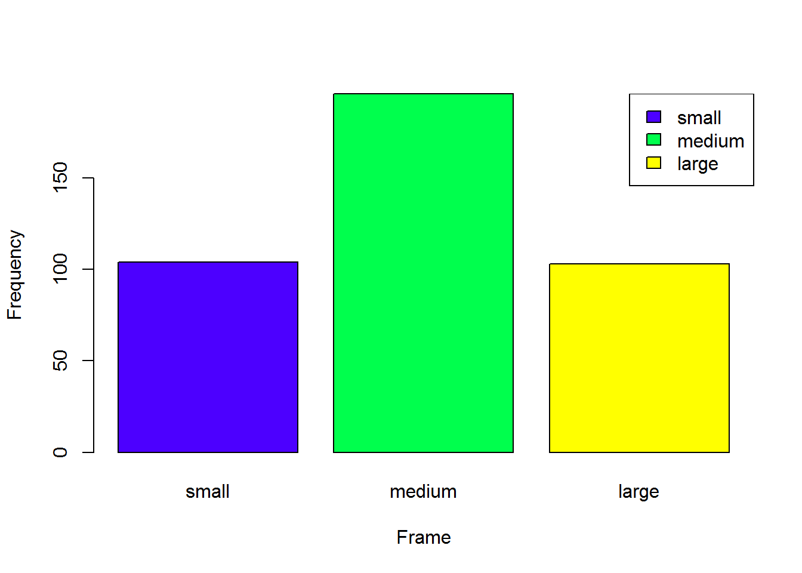
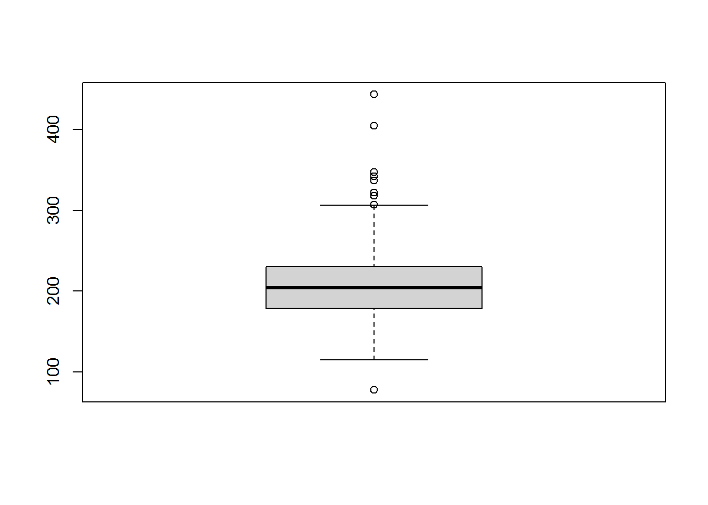
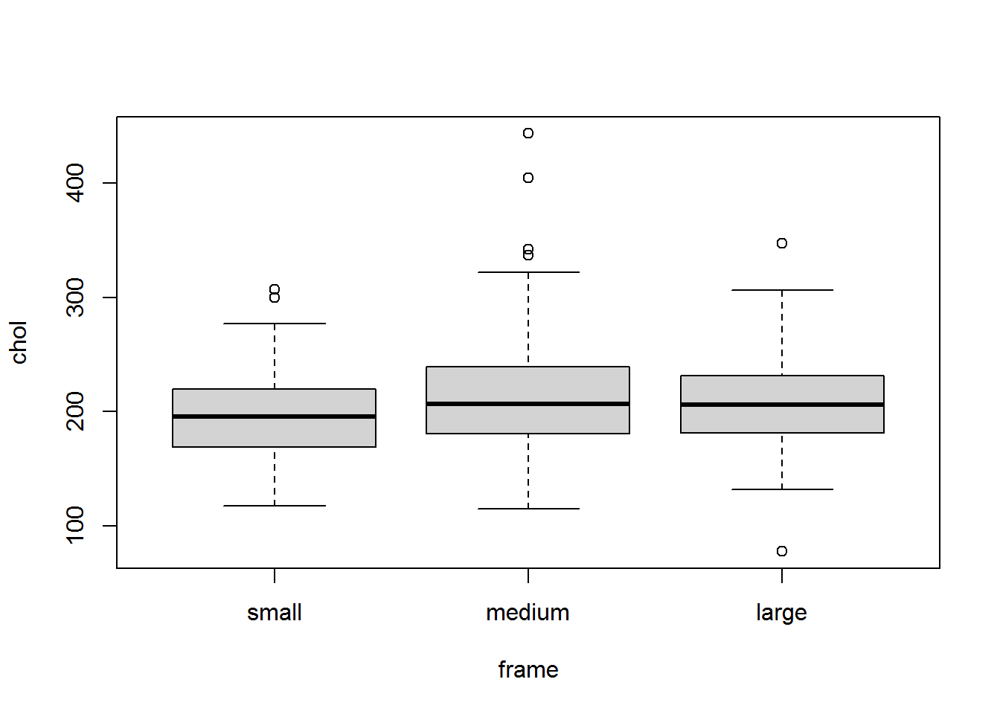
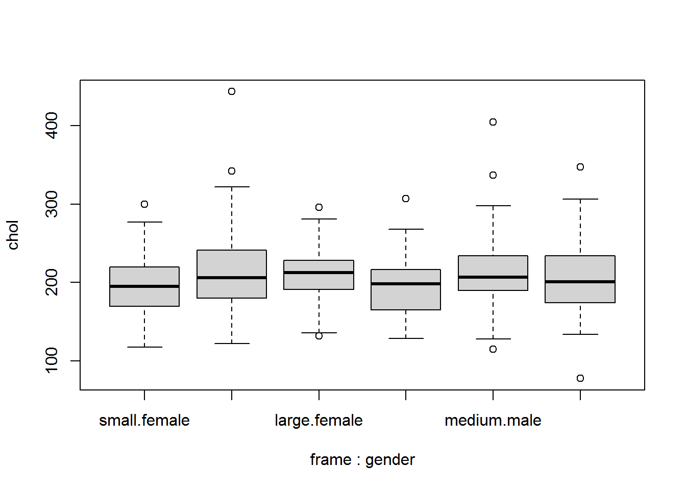
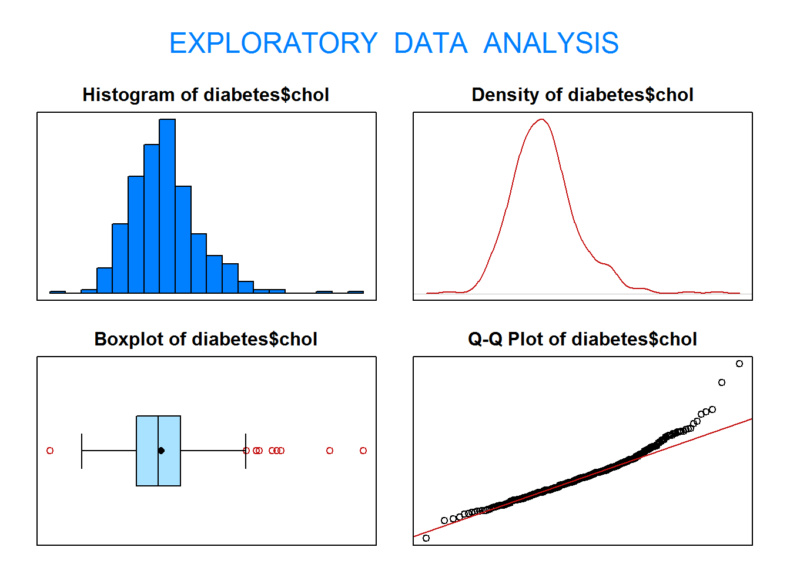
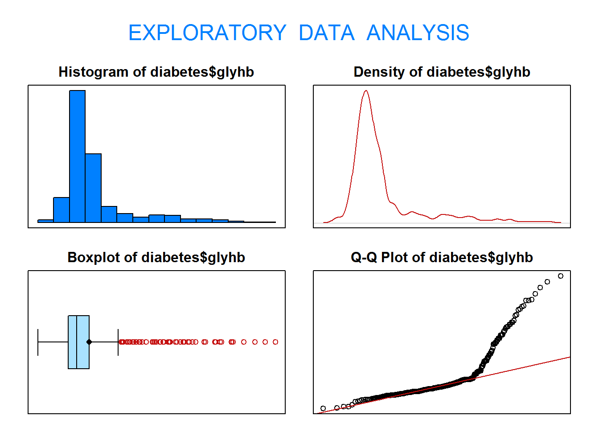
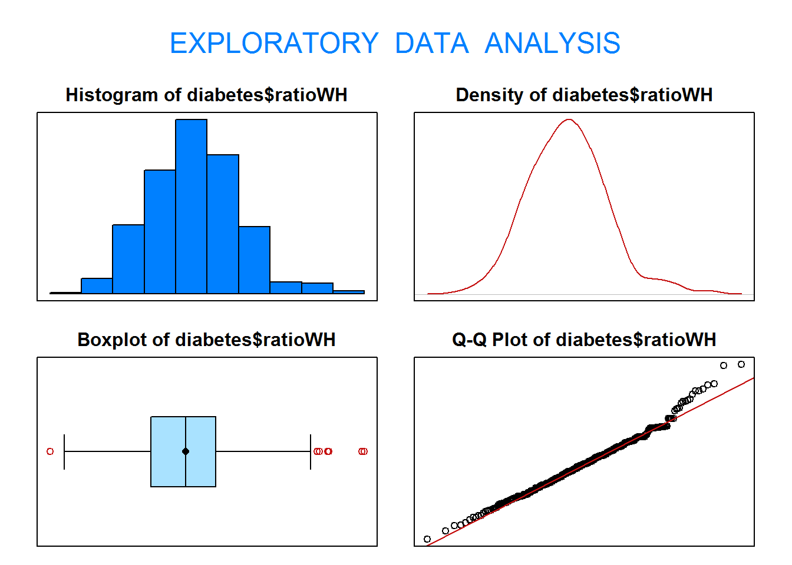

En esta práctica vamos a trabajar con el fichero de datos diabetes.
El fichero de datos contiene 19 variables medidas sobre 403 pacientes. Estos pacientes forman parte de un estudio con 1046 sujetos diseñado para investigar la prevalencia de la de obesidad, diabetes, y otros factores de riesgo cardiovasculares para Afroamericanos en Virginia, EEUU.
Según Dr John Hong, Diabetes Mellitus Tipo II está asociada con la obesidad. El índice cintura-cadera puede ser un predictor en diabetes y enfermedades de corazón.
Diabetes Mellitus Tipo II está también asociada con hipertensión y ambos pueden ser parte del “Síndrome X”.
Los 403 sujetos del estudio son aquellos a los que se les hizo un seguimiento de diabetes. La hemoglobina glicosilada >7.0 se toma normalmente como diagnóstico positivo de diabetes.
Para más información ver el paper: Willems JP, Saunders JT, DE Hunt, JB Schorling. Prevalence of coronary heart disease risk factors among rural blacks: A community-based study. Southern Medical Journal 90: 814-820; 1997. https://europepmc.org/abstract/med/9258308
Estas son las variables que contiene el fichero (se han eliminado alguna del fichero original y se han reemplazado algunos valores perdidos):
NOTA: Las categorías están ordenadas por orden alfabético
# Es posible indicar el orden de las categorías diabetes$frame <-factor(diabetes$frame, levels=c("small","medium","large"))levels(diabetes$frame)
[1] "small" "medium" "large"
1.5. Obtén una tabla de frecuencias absolutas y relativas para la variable frame.
table(diabetes$frame)
small medium large
104 196 103
table(diabetes$frame)/nrow(diabetes)
small medium large
0.2580645 0.4863524 0.2555831
1.6. Realiza una representación gráfica adecuada para la variable frame. ¿Qué información obtienes?
X <-table(diabetes$frame)# Diagrama de barrasbarplot(X, xlab="Frame", ylab="Frequency", col=topo.colors(3))legend("topright", legend=levels(diabetes$frame), fill=topo.colors(3))

# Diagrama de sectorespie(X, labels=names(X), col=topo.colors(3))legend("topleft", legend=levels(diabetes$frame), fill=topo.colors(3))
1.7. Calcula la moda de la variable frame. ¿Qué significa?
1.8. ¿Qué representaciones gráficas te parecen adecuadas para la variable chol?
1.9. Realiza un histograma y un diagrama de cajas de la variable chol. ¿Qué información obtienes de ellos?
par(mfrow=c(1,2),pty="s")hist(diabetes$chol, nclass="scott", col="cyan", main="Histograma", xlab="Colesterol")boxplot(diabetes$chol, col="pink", main="Diagrama de caja", xlab="Colesterol")
1.10. A la vista del diagrama de cajas y del histograma de la variable chol, qué puedes decir acerca de su simetría? ¿Qué crees que será mayor, la media o la mediana?
1.11. Calcula el coeficiente de asimetría, la media y la mediana de la variable chol. ¿Confirma dicho valor lo observado en el histograma y el diagrama de cajas?
summary(diabetes$chol)
Min. 1st Qu. Median Mean 3rd Qu. Max.
78.0 179.0 204.0 207.8 230.0 443.0
# También podemos utilizar la función eda() de la librería PASWR2library(PASWR2)eda(diabetes$chol)

Size (n) Missing Minimum 1st Qu Mean Median TrMean 3rd Qu
403.000 0.000 78.000 179.000 207.846 204.000 205.903 230.000
Max Stdev Var SE Mean I.Q.R. Range Kurtosis Skewness
443.000 44.390 1970.494 2.211 51.000 365.000 2.558 0.924
SW p-val
0.000
1.12. Calcula el mínimo, el máximo, los cuartiles y la desviación típica de la variable chol. ¿Entre qué valores se encuentra el 25% de las personas con el colesterol más alto? ¿Y el 75% de las personas con el colesterol más bajo? ¿Qué puedes decir acerca de la dispersión de la variable? ¿Dónde hay más dispersión, en el 25% de las personas con mayor colesterol o en el 25% de las personas con colesterol más bajo?
1.13. Calcula el coeficiente de curtosis de la variable chol. ¿Qué indica?
1.14. Según el diagrama de cajas, ¿existe alguna observación atípica? ¿Cuál es?
aux <-boxplot(diabetes$chol)
# Valores atípicosaux$out
[1] 78 443 318 347 342 404 307 337 322
1.15. ¿Cuántos hombres y cuántas mujeres hay en la muestra?
table(diabetes$gender)
female male
234 169
1.16. ¿Cuántas personas residen en Buckingham? ¿Cuántas en Louisa?
table(diabetes$location)
Buckingham Louisa
200 203
1.17. ¿Puedes calcular la media y la mediana de la variable location?
1.18. Realiza un diagrama de cajas de la variable chol según las categorías de la variable frame.
boxplot(chol~frame, data=diabetes)

1.19. Realiza un diagrama de cajas de la variable chol según las categorías de la variable frame y la variable gender.
boxplot(chol~frame+gender, data=diabetes)

1.20. Calcula la media, mediana, la desviación típica y los cuartiles de la variable chol según las categorías de la variable frame?
# Aplicamos la función summary() para cada categoría de la variable 'frame'tapply(diabetes$chol, diabetes$frame, summary)
$small
Min. 1st Qu. Median Mean 3rd Qu. Max.
118.0 169.5 196.0 197.6 219.2 307.0
$medium
Min. 1st Qu. Median Mean 3rd Qu. Max.
115.0 181.0 206.5 213.2 239.2 443.0
$large
Min. 1st Qu. Median Mean 3rd Qu. Max.
78.0 181.5 206.0 208.0 231.5 347.0
# Aplicamos la función sd() para cada categoría de la variable 'frame'tapply(diabetes$chol, diabetes$frame, sd)
small medium large
38.95477 46.87484 43.25211
1.21. Realiza un histograma de la variable chol según las categorías de la variable frame y la variable gender.
NOTA: La sintáxis de esta función es muy particular
1.22. Calcula la media, la mediana, los cuartiles y la desviación típica de la variable glyhb. Explica cómo está de dispersa utilizando el histograma, el diagrama de cajas, los cuartiles y la desviación típica.
eda(diabetes$glyhb)
Size (n) Missing Minimum 1st Qu Mean Median TrMean 3rd Qu
403.000 0.000 2.680 4.390 5.590 4.870 5.313 5.590
Max Stdev Var SE Mean I.Q.R. Range Kurtosis Skewness
16.110 2.206 4.867 0.110 1.200 13.430 5.252 2.266
SW p-val
0.000
1.23. Compara la dispersión de las variables chol y glyhb. ¿Qué variable tiene la desviación típica más alta? ¿Puedes concluir que aquella variable con la desviación típica más alta es la más dispersa? ¿Por qué? ¿Qué medida crees que es la más adecuada?
eda(diabetes$chol)

Size (n) Missing Minimum 1st Qu Mean Median TrMean 3rd Qu
403.000 0.000 78.000 179.000 207.846 204.000 205.903 230.000
Max Stdev Var SE Mean I.Q.R. Range Kurtosis Skewness
443.000 44.390 1970.494 2.211 51.000 365.000 2.558 0.924
SW p-val
0.000
eda(diabetes$glyhb)

Size (n) Missing Minimum 1st Qu Mean Median TrMean 3rd Qu
403.000 0.000 2.680 4.390 5.590 4.870 5.313 5.590
Max Stdev Var SE Mean I.Q.R. Range Kurtosis Skewness
16.110 2.206 4.867 0.110 1.200 13.430 5.252 2.266
SW p-val
0.000
# Para compara la dispersión de las variables debemos calcular el coeficiente de variaciónCV.col <-sd(diabetes$chol)/mean(diabetes$chol)CV.col
1.24. Considera la variable chol por sexo. Selecciona el hombre y la mujer con mayor nivel de colesterol. ¿Cuál de los dos destaca más en comparación a la media de su grupo?
# Definimos un conjunto de datos para los hombres y otro para las mujerespos <-which(diabetes$gender=="male")diabetes.male <- diabetes[pos,]pos <-which(diabetes$gender=="female")diabetes.female <- diabetes[pos,]# Calculamos los niveles de colesterol máximos x <-max(diabetes.male$chol)y <-max(diabetes.female$chol)# Tipificamos los valores x.tipif <- (x-mean(diabetes.male$chol))/sd(diabetes.male$chol)x.tipif
1.27. Calcula el mínimo, el máximo, los cuartiles y la desviación típica de la variable ratioWH. ¿Entre qué valores se encuentra el 25% de los valores más altos? ¿Y el 75% de los valores más bajos?
eda(diabetes$ratioWH)

Size (n) Missing Minimum 1st Qu Mean Median TrMean 3rd Qu
403.000 0.000 0.682 0.830 0.881 0.881 0.879 0.925
Max Stdev Var SE Mean I.Q.R. Range Kurtosis Skewness
1.143 0.072 0.005 0.004 0.095 0.461 0.644 0.383
SW p-val
0.002
summary(diabetes$ratioWH)
Min. 1st Qu. Median Mean 3rd Qu. Max.
0.6818 0.8298 0.8806 0.8809 0.9250 1.1429
2. Tablas de doble entrada
2.1. ¿Cuántos hombres y cuántas mujeres hay en la localización Buckingham? ¿Cuántos en Louisa?
table(diabetes$gender,diabetes$location)
Buckingham Louisa
female 114 120
male 86 83
2.2. ¿Qué porcentaje de personas en la muestra tienen un body frame “small” y además son de Buckingham?
X <-table(diabetes$frame,diabetes$location)prop.table(X)
Buckingham Louisa
small 0.11910670 0.13895782
medium 0.22084367 0.26550868
large 0.15632754 0.09925558
2.3. Dibuja un diagrama de barras donde representes las frecuencias de la variable location para cada una de las categorías de la variable frame?
X <-table(diabetes$location,diabetes$frame)X
small medium large
Buckingham 48 89 63
Louisa 56 107 40
2.4. Forma una tabla de doble entrada cruzando las variables gender y frame. ¿Cuántas mujeres tienen un body frame “medium”?
Y <-table(diabetes$gender,diabetes$frame)Y
small medium large
female 69 123 42
male 35 73 61
2.5. ¿Qué porcentaje de hombres tienen un body frame “large”?
prop.table(Y)
small medium large
female 0.17121588 0.30521092 0.10421836
male 0.08684864 0.18114144 0.15136476
prop.table(Y,1)
small medium large
female 0.2948718 0.5256410 0.1794872
male 0.2071006 0.4319527 0.3609467
3. Covarianza y correlación
3.1. Realiza un diagrama de dispersión de las variables weight y waist. ¿Crees que existe relación lineal entre ambas variables? Calcula la covarianza y el coeficiente de correlación lineal.
3.2. Realiza un diagrama de dispersión de las variables chol y weight. ¿Crees que existe relación lineal entre ambas variables? Calcula la covarianza y el coeficiente de correlación lineal.
3.3. Selecciona las personas del condado de Buckingham y realiza un diagrama de dispersión de las variables waist y hip. ¿Crees que existe relación lineal entre ambas variables? Calcula la covarianza y el coeficiente de correlación lineal.
3.4. Selecciona las mujeres con body frame “medium” y realiza un diagrama de dispersión de las variables bp.1s y age. ¿Crees que existe relación lineal entre ambas variables? Calcula la covarianza y el coeficiente de correlación lineal.
4.1. Realiza un histograma y un diagrama de cajas. Interpreta los gráficos obtenidos. ¿Qué puedes decir acerca de la simetría y la dispersión de la variable bp.1s?
4.2. Calcula la media, mediana, cuartiles, desviación típica, coeficientes de asimetría y de curtosis, y los coeficientes de variación. Indica sus unidades e interpreta los estadísticos (en aquellos casos que sea posible).
4.3. Dibuja un histograma y un diagrama de cajas en función de la variable sexo. Interpreta los gráficos obtenidos.
4.4. Realiza un diagrama de dispersión de las variables bp.1s y bp.1d“. ¿Crees que existe relación lineal entre ellas? Calcula e interpreta la covarianza y el coeficiente de correlación lineal (indica sus unidades).
4.5. Selecciona el hombre y la mujer con menor presión diastólica. ¿Cuál de los dos destaca más en comparación a la media de su grupo?